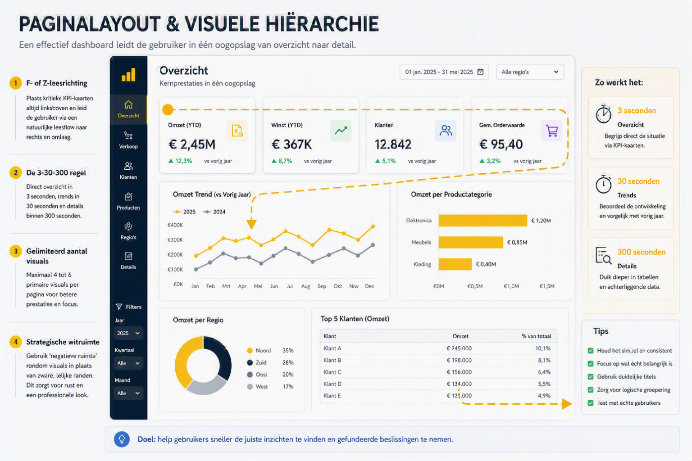

Categorie 1 - Leesbare Structuur
Begin met paginalayout en visuele hierarchie
- Werk in F- of Z-richting: zet kern-KPI's linksboven en details rechtsonder.
- Gebruik de 3-30-300 aanpak: overzicht in 3 seconden, trends in 30 seconden en verdieping in 300 seconden.
- Beperk hoofdvisuals: houd het bij 4 tot 6 primaire visuals per pagina.
- Gebruik witruimte bewust: minder ruis, betere scanbaarheid.